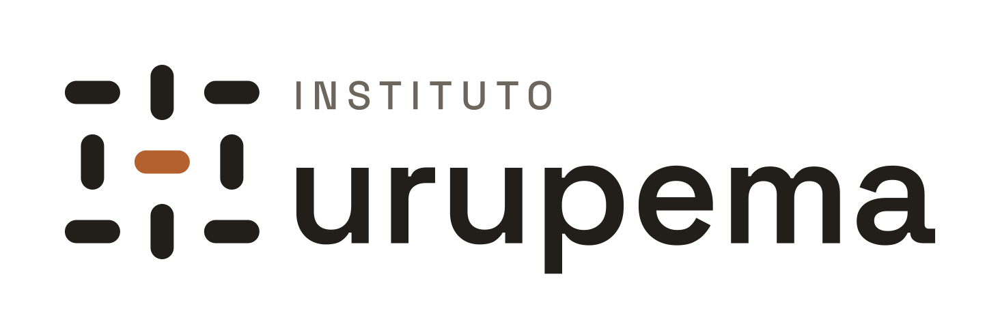

FormaçãoEngenharia de dados · Turma de março
Dez meses, com prioridade para quem está fora do mercado. Você sai com um projeto real no portfólio e com entrevistas marcadas.
Como a trilha funciona
Programação, bancos de dados e versionamento.
meses 1–3Um problema de uma organização parceira, com dado de verdade.
meses 4–8Código, documentação e parecer de banca com código de verificação.
mês 9Entrevistas com empresas e órgãos que contratam.
mês 10Inscrições até 15 fev 2027 · 40 vagas